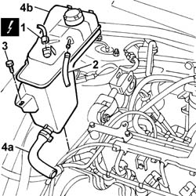

1088B10 Engine coolant SUPPLY RESERVOIR - R.R.
- Path
- Procedures > 10 ENGINE > 1088 ENGINE COOLING > 1088B ENGINE COOLANT RADIATOR AND RESERVOIR > 1088B10 Engine coolant SUPPLY RESERVOIR - R.R.
- Kind
- repair procedure (removal / refitting; the operation number is the code)
- Applies to
- engines: 2.4 JTD 10V; all production periods
- Interactive page
- https://sloeber94.github.io/elrnDB-lThss/en/#/76175
Applies to: all engines; all production periods
 Removing
Removing
 Refitting
RefittingSee in Op. 1016A10
1. Disconnect the electrical connection for the sensor on the engine coolant reservoir.
 | Description | Connector |
|---|---|---|
1 | Engine coolant level sensor | K026 |
2. Disconnect the engine coolant recirculation pipe.
3. Undo the bolt fixing the reservoir to the bodyshell.
4. Disconnect the engine coolant supply pipe (4a) to the rigid pipe and remove the supply reservoir (4b).

Applies to: all engines; all production periods
Refitting
Removing- Connect the engine coolant supply pipe (4a) to the rigid pipe and fit the supply reservoir in the housing.
- Tighten the bolt fixing the reservoir to the bodyshell.
- Connect the engine coolant recirculation pipe.
- Connect the electrical connection for the sensor on the engine coolant reservoir.
| Description | Connector |
|---|---|---|
. | Engine coolant level sensor | K026 |
See in Op. 1016A10
- 0010T21